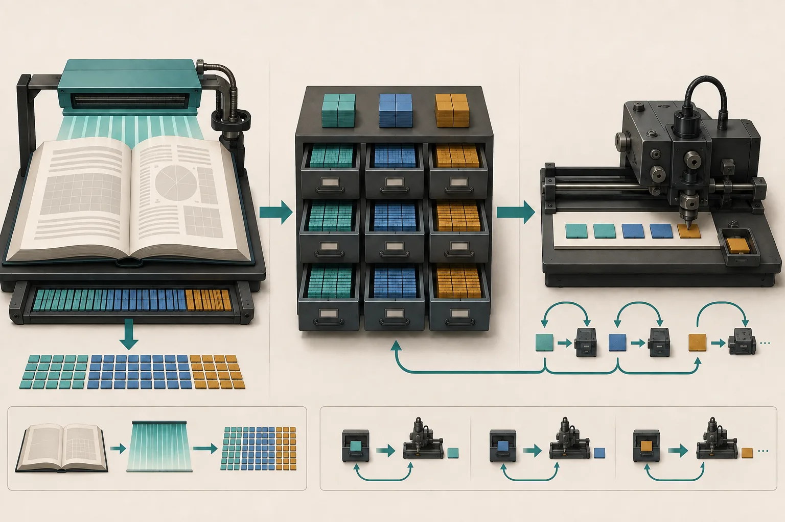

模型怎样一个字一个字回答：LLM 推理基础
从 Token、Prefill 和 Decode 出发，理解批处理、KV Cache、TTFT、TPOT 与延迟吞吐权衡。
本页目录
学习目标
能描述请求从文本到 Token、Prefill、Decode 再到流式响应的过程；会区分 TTFT、TPOT 与吞吐；理解 Continuous Batching 和 KV Cache 为什么是推理系统核心。
一句话直觉：Prefill 像先读完整份材料并做笔记，Decode 像一边看笔记一边逐字写答案；KV Cache 就是那份避免反复重读的笔记。

文本先变成 Token
模型处理的不是汉字或英文单词，而是 Token ID。一个汉字不总等于一个 Token，英文单词也可能被拆开。计费、上下文长度、缓存和输出速度通常都以 Token 为单位。
Prefill 与 Decode
sequenceDiagram
participant C as 客户端
participant S as 推理服务器
participant G as GPU
C->>S: Prompt Tokens
S->>G: Prefill 整段输入
G-->>S: KV Cache + 首个 Token
S-->>C: TTFT 到达
loop 每个后续 Token
S->>G: Decode 一步
G-->>S: 新 Token + 更新 Cache
S-->>C: 流式输出
end
Prefill 能并行处理大量输入 Token，常更偏计算密集；Decode 每步只生成一个 Token，却反复读取权重与 KV Cache，常更受显存带宽限制。
三个指标
| 指标 | 定义 | 用户感受 |
|---|---|---|
| TTFT | 请求开始到第一个 Token | “多久开始回答” |
| TPOT / ITL | 后续 Token 的平均间隔 | “回答是否流畅” |
| Throughput | 单位时间系统处理的 Token 或请求 | “整个平台能服务多少人” |
总响应时间可近似为：TTFT + (输出 Token 数 - 1) × TPOT。这是教学近似；网络传输、客户端渲染与排队会让真实情况更复杂。
KV Cache 为什么会变大
Transformer 的 Attention 需要历史 Token 的 Key 和 Value。若每生成一个 Token 都重算全部历史，成本会不断增加。缓存历史 K/V 后，只计算新 Token 部分。
KV Cache 大小大致与 层数 × 2(K和V) × KV Heads × Head Dimension × Token 数 × Batch × 每元素字节数 成正比。
Continuous Batching
静态 Batch 等整组请求全部结束再换下一组，短请求会被长请求拖住。Continuous Batching 在每个 Decode 步骤后接纳新请求、移除已结束请求，让 GPU 批次持续保持饱满。
它提高吞吐，但调度器仍要在批次大小、等待时间、显存和公平性之间取舍。大 Batch 可能让 GPU 更忙，却使单个请求排队更久。
Prefix Caching
多个请求若共享系统提示、长文档或历史前缀，可以复用已计算的 KV Block。Agent 往往反复携带工具定义和长对话，因此命中率可能很高。但缓存也要解决哈希、隔离、淘汰、跨副本路由和 Offload 成本。
模型权重怎样进入 GPU
请求能到达之前，服务要先从对象存储、模型仓库或节点缓存读取权重，完成校验、反序列化、量化或格式转换，再把分片放进 CPU/GPU 内存。几十到数百 GB 的权重会让新副本经历明显冷启动。容器“Running”不等于模型“Ready”；健康检查必须等到权重加载、通信组建立和最小推理验证完成。
节点本地缓存可减少重复下载，但要处理版本、校验和、磁盘容量和淘汰。把权重缓存与 KV Cache 分开：前者跨请求共享、随模型版本变化；后者属于特定上下文，随会话和 Token 增长。
完整案例：长文档问答为什么首字慢
用户提交 12k Token 文档并要求输出 200 Token。TTFT 包含入口排队、Tokenize、长 Prompt 的 Prefill，也可能包含冷副本加载权重；首字出来后，TPOT 主要由 Decode 批次、显存带宽和 KV 压力决定。若系统提示和文档前缀重复，Prefix Cache 能减少 Prefill，但第一次请求仍要完整计算。
估算器给出的 KV 是逻辑总量。使用 Tensor Parallel 时，每张卡实际持有的 KV 取决于 KV Head 如何切分；分页、对齐和运行时工作区还会增加显存。因此它是教学模型，不是容量承诺。
动手练习（20 分钟）
参考答案
展开参考答案
上下文增长主要增加 Prefill 和 KV；Batch 同样直接放大 KV。输出 Token 增加对 TTFT 影响很小，却按 TPOT 累加完整响应时间。生产环境还需加入排队、网络与冷启动，不能把演示数值当 Benchmark。
学完检查
- 我能分清模型权重、KV Cache 和 Checkpoint。
- 我能用 TTFT、TPOT 与输出长度近似完整响应时间。
- 我知道 Pod Running 与模型 Ready 之间还有加载和验证阶段。
常见误区
| 误区 | 修正 |
|---|---|
| TTFT 包含整个回答时间 | 它只到首个 Token。 |
| KV Cache 缓存模型权重 | 它缓存特定序列的注意力 K/V 状态。 |
| Batch 越大越好 | 可能增加排队、显存压力和尾延迟。 |
| Tokens/s 可以跨模型直接比较 | Tokenizer、模型、输入输出长度和口径都可能不同。 |
对应论坛场次
听清 TTFT、吞吐与利用率分别如何变化。 9/9 15:30 · vLLM KV Cache Management
关注 Prefix Cache、CPU Offload、LRU/ARC 与 Agent 场景。
离线笔记：Celia 推理平面 · vLLM KV Cache
带着这些问题听
- 输入/输出长度、Batch 与并发是多少？
- 报告的是平均值还是 P95/P99？是否包含排队和网络？
- 缓存命中后节省计算，却增加了多少容量与传输成本？
五道自测题
1. Prefill 做什么？
并行处理输入上下文，建立 KV Cache，并产生第一个输出所需状态。
2. TTFT 与 TPOT 的用户感受分别是什么？
TTFT 决定多久开始回答；TPOT 决定后续文字流是否顺畅。
3. KV Cache 为什么能加速 Decode？
保存历史 Token 的注意力 K/V，避免每一步重算全部历史。
4. Continuous Batching 与静态 Batch 的区别？
它能在 Decode 步之间动态加入新请求、移除已完成请求。
5. 为什么吞吐和延迟可能冲突？
为了让 GPU 批次更满而等待更多请求，会提高整体吞吐但增加单请求排队。